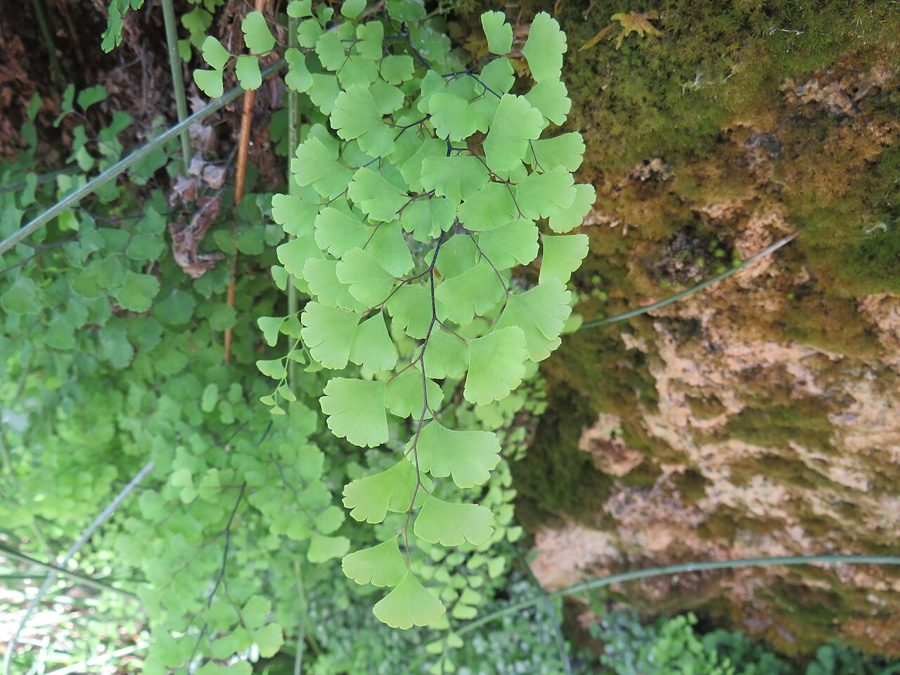

हंसराजMaidenhair Fern
Adiantum capillus-veneris · Pteridaceae · FLR-0186

- Scientific name वैज्ञानिक नाम
- Adiantum capillus-veneris L.
- Family कुल
- Pteridaceae
- Hindi हिंदी
- हंसराज
- Local names स्थानीय नाम
- hansraj, hans raj, hansaraj, maidenhair fern, maidenhair
- Status here यहाँ की स्थिति
- native
- Movement आवागमन
- Resident, here all year
- IUCN IUCN
- LC
- Review समीक्षा
- audited and independently read
When to look कब देखें
Present all year. साल भर मौजूद।
Uses and possibilities उपयोग और संभावनाएँ
“Traditional medicine” means a documented traditional use, not a claim that it works. Nothing on this page is medical advice.
Drawn from the documented uses in the profile below, where each is labelled traditional, current or a research lead. All uses →
हंसराज / Maidenhair Fern
Adiantum capillus-veneris L. — Pteridaceae
हंसराज — पूर्वी उत्तर प्रदेश के हर झरने के पास की नाज़ुक फर्न, जिसकी पत्तियाँ इतनी सूक्ष्म होती हैं कि लगता है हंस के बाल झूल रहे हों। बहुत नरम, हरी, पानी में नहीं भिगती — ऊपर से पानी खिसक जाता है। धार्मिक पूजा में इसकी पत्तियाँ चढ़ाई जाती हैं। घर में गमले में रखा भी जाता है, पर बहुत नाज़ुक है। पत्तियों से दवा बनती है।
Quick Identification त्वरित पहचान
| Feature | Description |
|---|---|
| Frond | Feathery, delicate; bright green; 20–40 cm tall |
| Leaflets | Tiny, fan-shaped or wedge-shaped; arranged alternately along rachis |
| Rachis | Shiny black or dark purple; very slender and graceful |
| Sori | Tiny rounded clusters at leaflet margins; covered by flap-like indusium |
| Texture | Paper-thin leaflets; silky appearance |
| Moisture | Leaflets are water-repellent; beaded water droplets do not wet the surface |
Field tip: Maidenhair Fern is identified by feathery fronds with tiny fan-shaped leaflets on a jet-black wiry rachis. The name "maidenhair" refers to the thin black stalk, which resembles human hair. Any fern with black wiry stalk and tiny delicate leaflets growing on moist rocks or near water is likely Adiantum capillus-veneris.
हिंदी: नाज़ुक, सफ़ेद फूलों जैसी पत्तियाँ। पत्तियों का डंठल काला। पानी नहीं भिगती।
Morphology आकारिकी
| Feature | Measurement |
|---|---|
| Frond (fronde) height | 20–40 cm |
| Leaflet length | 5–10 mm |
| Leaflet width | 8–15 mm |
| Rachis diameter | 0.5–1.0 mm |
| Spore (sporangium) size | 0.3–0.5 mm |
Frond structure: Pinnately compound; the main rachis (central stalk) is thin, wiry, jet-black, glossy, and highly graceful. Pinnae (primary divisions) branch alternately from the rachis; each pinna bears a row of small leaflets (pinnules).
Leaflets (Pinnules): Tiny, fan-shaped or wedge-shaped; 5–10 mm long; arranged in two rows along the pinna rachis, set at approximately 45° angle to the axis. Margins smooth or slightly lobed. Texture thin and papery; bright to medium green. Hydrophobic surface: The upper leaflet surface is covered with a thin wax layer that repels water; water droplets bead up and roll off without wetting the surface — unusual among ferns.
Rhizome: Short, dark, creeping; covered with dark brown hair-like scales.
Sori: Small, roundish clusters located at the leaflet margins; each sorus is protected by a flap-like indusium (false indusium) that curves over the spore-containing chamber. This indusium is distinctive for the genus Adiantum.
Spores: Monomorphic (one type); produced in sporangia within the sori; spores are oval, brown, with a granular surface.
हिंदी: बहुत छोटी पत्तियाँ, काले डंठल पर। पानी की बूँदें सरक जाती हैं।
Ecological Role पारिस्थितिक भूमिका
Moisture indicator and rock colonizer: Adiantum capillus-veneris colonizes moist rocky habitats — spray zones of waterfalls, seeping rock faces, damp gorges. Its presence indicates reliable moisture and suggests intact hydrological systems.
Understory inhabitant: In shaded forest margins and deep ravines, it contributes to the lush understory vegetation. Its delicate fronds add structural diversity to the herb layer.
Ecosystem associate: On rocky faces, it traps fine soil particles and organic matter, creating microsites for moss, lichens, and other small plants. This facilitates soil development on otherwise barren rock.
Water-holding capacity: Dense fern populations on rock faces may slow water runoff and increase water infiltration, modulating local hydrological processes.
हिंदी: झरनों के पास रहती है। पानी के संकेत देती है। पत्थर को मिट्टी में बदलती है।
Life Cycle / Phenology जीवन चक्र
- Year-round evergreen: Fronds persist throughout the year; no dormant season in tropical/subtropical climates
- Peak growth: Monsoon and post-monsoon (July–October), when moisture is highest
- Frond development: New fronds emerge continuously from the rhizome; growth is slow but persistent
- Sori maturation: Sporangia mature throughout the year, with higher sporulation in monsoon
- Spore release: Spores released when conditions are humid; dispersal is passive (wind) but requires moisture for germination
- Gametophyte: Microscopic, heart-shaped, short-lived; develops on moist surfaces; requires high humidity and liquid water
- Lifespan: Individual fronds persist 4–8 months; rhizome is perennial
Associated Species / Interactions संबंधित प्रजातियाँ
- Mosses and lichens: Dense moss and lichen communities often grow alongside Adiantum
- Aquatic insects: The humid microclimate supports aquatic insect larvae (mayflies, caddisflies)
- Small arthropods: Tiny crustaceans, collembolans, and acari shelter in the fern canopy
- Other ferns: Ferns like Diplazium and Asplenium often grow in the same habitat
Agricultural / Human Relevance कृषि प्रासंगिकता
Ornamental and cultural use:
In eastern Uttar Pradesh, Maidenhair Fern is valued as:
- Religious/spiritual use: Fronds are offered in Hindu temples and shrines as part of daily worship (पूजा). Fresh fronds are preferred and are sold in bazaars for temple use.
- Household ornament: The fern is grown in pots (गमला) as an indoor or courtyard ornament, particularly in educated households and botanical gardens. It requires consistently moist conditions and shade, making it challenging for many home gardeners.
- Medicinal/traditional use: In Ayurvedic tradition, the frond decoction is recommended for:
- Cough and respiratory complaints (documented in Sushruta Samhita)
- Fever and general weakness (mentioned in Charaka Samhita)
- Hair health (traditional; possibly related to the name)
Evidence: Documented traditional use; no clinical trials in modern medicine.
Ecological importance:
The fern's preference for moist seepage areas means that its presence indicates:
- Intact perennial water sources (springs, seeps)
- Absence of drainage/desiccation
- Low chemical inputs (clean water)
Conservation concern: While not threatened globally, local populations are vulnerable to:
- Water source destruction (damming, irrigation abstraction)
- Rock face destruction (quarrying, construction)
- Over-collection for ornamental and temple trade
Expected Locally स्थानीय रूप से अपेक्षित
Not a field record. Written from published accounts for eastern Uttar Pradesh. No confirmed local sighting yet — if you have seen it, that is what the atlas needs.
अभी तक स्थानीय पुष्टि नहीं। यह विवरण प्रकाशित स्रोतों से है, किसी अवलोकन से नहीं।
Maidenhair Fern is to be expected in Basti and Ayodhya districts at moist rocky locations, waterfalls, springs, and seepage areas, particularly in ravines and forest margins where humidity is consistently high. The fern should be visible year-round but is most lush during the monsoon. A first confirmed local record would be a photograph showing the characteristic black rachis and tiny fan-shaped leaflets, with location details (waterfall name, near a temple, etc.), elevation if possible, and date documented.
Distribution वितरण
Global range: Native to temperate and tropical regions of Eurasia; found from the Mediterranean basin through the Middle East to the Himalayas and Southeast Asia.
In India: Distributed in the Western Ghats, Himalayas, and northeastern India; particularly common in moist mountainous regions.
In Uttar Pradesh: Reported from the Himalayan foothill region (Dehradun, Nainital districts) and hill stations; distribution in plains is localized and rare.
In Basti district / eastern UP: Unlikely in lowland plains; possible only in specially prepared ponds or water gardens. Not documented in wild habitats in eastern UP plains.
Research Questions शोध प्रश्न
- Are there populations of Adiantum capillus-veneris in the Siwalik foothills or hill stations near eastern UP, and what are their habitat characteristics? — Field surveys of moist ravines and springs.
- Is the temple/ornamental trade in maidenhair fern sustainable, and what is the local price? — Bazaar survey; interview temple gardeners.
- Can Adiantum capillus-veneris be cultivated indoors or in shaded garden settings in eastern UP, and what are the key cultivation requirements? — Cultivation trial in home gardens.
- What are the traditional medicinal applications of maidenhair fern in eastern UP, and is there documentation of efficacy? — Ethnobotanical interviews; literature review.
- How does the rhizome and frond morphology of wild-collected Adiantum differ from ornamental garden specimens? — Comparative morphological study.
Similar Species मिलती-जुलती प्रजातियाँ
| Species | How to tell apart | हिंदी |
|---|---|---|
| Adiantum venustum (Himalayan Maidenhair) | Leaflets more deeply lobed; rachis less distinctly black; habitat higher altitude | हिमालयी |
| Adiantum philippense (Delta Maidenhair) | Larger leaflets; less delicate; more common in plains | बड़ी पत्तियाँ |
| Other pteridophytes | Not truly similar if leaflets are examined; the combination of black wiry rachis + tiny fan-shaped leaflets is diagnostic | अलग होती हैं |
Field rule: A fern with a jet-black wiry stalk and tiny fan-shaped leaflets that repel water is maidenhair fern (Adiantum capillus-veneris).
Taxonomy & Classification वर्गीकरण
Original description. Adiantum capillus-veneris was described by Carl Linnaeus in 1753 in Species Plantarum 2: 1096. The type locality is likely the Mediterranean region. The species epithet capillus-veneris means "Venus's hair" (or "maidenhair" — a poetic reference to the fineness of the black rachis).
Subspecies. Monotypic — no subspecies are currently recognised, though populations show some morphological variation across its range.
Family and order placement. Order Polypodiales, family Pteridaceae. Pteridaceae is a cosmopolitan family of ferns.
Phylogenetic notes. Adiantum capillus-veneris is the type species for the genus Adiantum and is phylogenetically well-supported as distinct from other Adiantum species based on molecular data.
IUCN status rationale. Classified as Least Concern (LC). The species is widespread and locally abundant; no significant declines are documented. However, local populations are vulnerable to water source destruction.
Photo Gallery फोटो गैलरी
Photos needed आवश्यक फोटो
- [ ] Whole frond showing feathery form (पूरा पत्ता)
- [ ] Close-up of leaflets and black rachis (डंठल)
- [ ] Growing on wet rock face (पत्थर पर)
- [ ] Water droplets on leaflet surface (पानी की बूँदें)
No photos yet — add field photos to media/species/maidenhair_fern/ and run node scripts/sync_photos.js.
References संदर्भ
- Linnaeus, C. (1753). Species Plantarum, 2: 1096. Laurentii Salvii, Holmiae. [original description]
- Fraser-Jenkins, C.R. (2008). Taxonomic Revision of Three Hundred Indian Subcontinental Pteridophytes. Bishen Singh Mahendra Pal Singh, Dehra Dun.
- Botanical Survey of India (1995). Flora of Uttar Pradesh, Vol. 2 (Pteridophyta and Gymnosperms). BSI, Calcutta.
- Manickam, V.S. & Irudayaraj, V. (1992). Pteridophytic Flora of Western Ghats, South India. Bishen Singh Mahendra Pal Singh, Dehra Dun.
- Kirtikar, K.R. & Basu, B.D. (1935). Indian Medicinal Plants, 2nd ed., vol. 4. Lalit Mohan Basu, Allahabad. [traditional use reference]
- GBIF Occurrence Data — Adiantum capillus-veneris, India (2026).
Source file: species/lower_plants/ferns/maidenhair_fern.md